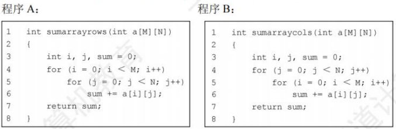
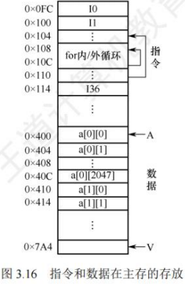
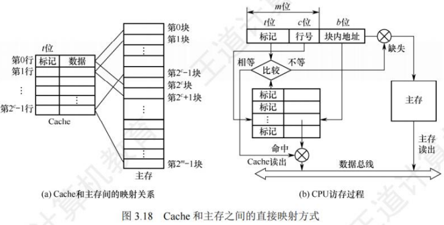
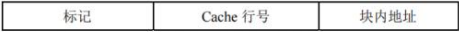
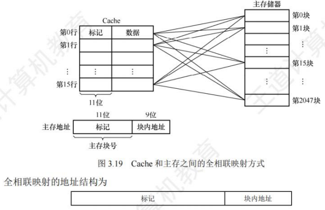
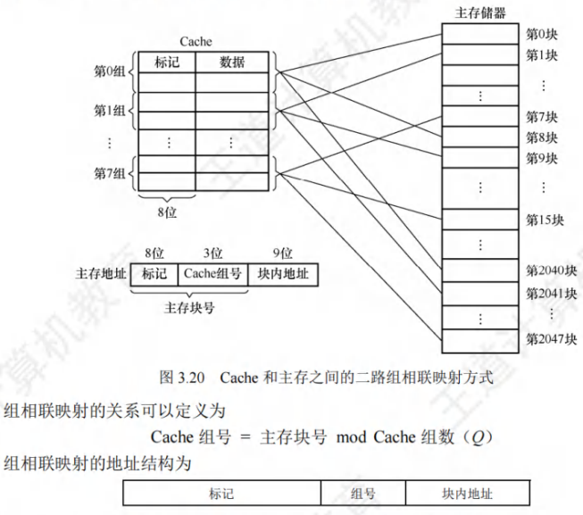
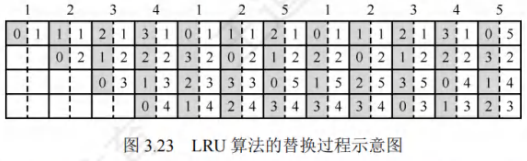
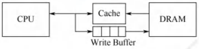
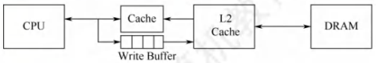

高速缓冲存储器
[toc]
由于程序的转移概率不会很低，数据分布的离散性较大，因此单纯依靠并行主存系统提高主存系统的效率是有限的。高速缓存Cache拥有比主存更快的速度，在CPU和主存之间设置Cache可以显著提高存储系统的效率，Cache由SRAM组成，通常直接集成在CPU中。
程序访问的局部性原理
程序访问的局部性原理包括时间局部性和空间局部性。
- 时间局部性：最近的未来要用到的信息，很可能是现在正在使用的信息，因为程序中存在循环、多次重复执行的子程序段以及对数组的存储和访问操作。
- 空间局部性：最近的未来要用到的信息，很可能与现在正在使用的信息在存储空间上是邻近的，因为指令通常顺序存放、顺序执行，数据一般以向量、数组等形式簇聚地存储。
高速缓冲技术就是利用局部性原理，把程序中正在使用的部分数据存放在一个高速的、容量较小的Cache中，使CPU的访存操作大多数针对Cache进行，从而提高程序的执行速度。
**【例3.2】**假设数组元素按行优先方式存储，对于下面的两个程序:

- 对于数组a的访问，哪个空间局部性更好？哪个时间局部性更好
- 对于指令访问来说，for循环体的空间局部性和时间局部性如何？
解：假定M、N都为2048，按字节编址，每个数组元素占4字节，则指令和数据在主存中的存放情况如图3.16所示。

- 对于数组a，程序A和程序B的空间局部性相差较大。
- 程序A对数组a的访问顺序为a[0][0],a[0][1],…a[0][2047];a[1][0], a[1][1], …, a[1][2047]; … ，访问顺序与存放顺序一致，因此空间局部性好。
- 程序B对数组a的访问顺序为a[0][0],a[1][0],…a[2047][0];a[0][1],a[1][1], …, a[2047][1]; … ，访问顺序与存放顺序不一致，每次访问都要跳过2048个数组元素，即8192字节，若主存与Cache的交换单位小于8KB，则每访问一个数组元素都需要将一个主存块装入Cache，因而没有空间局部性。
- 两个程序中，数组a的时间局部性都差，因为每个数组元素都只被访问一次。
- 对于for循环体，程序A和程序B中的访问局部性是一样的。因为循环体内指令按序连续存放，所以空间局部性好；内循环体被连续重复执行2048×2048次，因此时间局部性也好。
由上述分析可知，虽然程序A和程序B的功能相同，但因内、外两重循环的顺序不同而导致两者对数组a访问的空间局部性相差较大，从而带来执行时间的巨大差异。
Cache的基本工作原理
为便于Cache与主存交换信息，Cache和主存都被划分为大小相等的块，Cache块也称Cache行，每块由若干字节组成，块的长度称为块长(也称行长)。因为Cache的容量远小于主存的容量，所以Cache中的块数要远少于主存中的块数，Cache中仅保存主存中最活跃的若干块的副本。因此，可按照某种策略预测CPU在未来一段时间内欲访存的数据，将其装入Cache。图3.17所示为Cache的基本结构。
当CPU发出读请求时：
- 若访存地址在Cache中命中，就将此地址转换成Cache地址，直接对Cache进行读操作，与主存无关。
- 若Cache不命中，则仍需访问主存，并把此字所在的块一次性地从主存调入Cache。若此时Cache已满，则需根据某种替换算法，用这个块替换Cache中原来的某块信息。整个过程全部由硬件实现。
值得注意的是，CPU与Cache之间的数据交换以字为单位，而Cache与主存之间的数据交换则以Cache块为单位。
当CPU发出写请求时，若Cache命中，有可能会遇到Cache与主存中的内容不一致的问题。例如，由于CPU写Cache，把Cache某单元中的内容从X修改成X"，而主存对应单元中的内容仍然是X，没有改变，因此若Cache命中，需要按照一定的写策略处理，常见的处理方法有全写法和回写法，详见本节的Cache写策略部分。
某些计算机中也采用同时访问Cache和主存的方式，若Caache命中，则终止访存。
CPU欲访问的信息已在Cache中的比率称为Cache的命中率。设一个程序执行期间，Cache的总命中次数为，访问主存的总次数为，则命中率为：
可见为提高访问效率，命中率越接近1越好。设为命中时的Cache访问时间，为未命中时的访问时间，表示未命中率，则Cache-主存系统的平均访问时间为：
**【例3.3】**假设Cache的速度是主存的5倍，且Cache的命中率为95%，则采用Cache后，存储器性能提高多少(假设采用先访问Cache，Cache不命中时，才采用访问主存的方式)?
解：设Cache的存取周期为，主存的存取周期为，得出系统的平均访问时间为
或
可知，采用Cache后的存储器性能为原来的倍。
根据Cache的读、写流程，可知实现Cache时需解决以下关键问题:
- 数据查找：如何快速判断数据是否在Cache中。
- 地址映射：主存块如何存放在Cache中，如何将主存地址转换为Cache地址。
- 替换策略：Cache满后，使用何种策略对Cache块进行替换或淘汰。
- 写入策略：如何既保证主存块和Cache块的数据一致性，又尽量提升效率。
Cache和主存的映射方式
由于Cache行数比主存块数少得多，因此主存中只有一部分块的信息可放在Cache中。所以，在Cache中要为每块加一个标记位，指明它是主存中哪一块的副本，该标记的内容相当于主存中块的编号。为了说明Cache行中的信息是否有效，每个Cache行需要一个有效位。
Cache行中的信息是主存中某个块的副本，地址映射是指把主存地址空间映射到Cache地址空间，即把存放在主存中的信息按照某种规则装入Cache。地址映射的方法有以下3种：
直接映射
主存中的每一块只能装入Cache中的唯一位置。若这个位置已有内容，则产生块冲突，原来的块将无条件地被替换出去（无须使用替换算法）。直接映射实现简单，但不够灵活，即使Cache的其他许多地址空着也不能占用，这使得直接映射的块冲突概率最高，空间利用率最低。
- 直接映射的关系可定义为：$ \text{Cache行号} = \text{主存块号} \mod \text{Cache总行数} $
假设Cache共有行，主存有块，在直接映射方式中，主存的第块、第块、第块…只能映射到Cache的第行；而主存的第块、第块、第块…只能映射到Cache的第行，以此类推。由映射函数可看出，主存块号的低位正好是它要装入的Cache行号。给每个Cache行设置一个长为的标记(tag)，当主存某块调入Cache后，就将其块号的高位设置在对应Cache行的标记中，如图3.18(a)所示。

- 直接映射的地址结构为：

CPU访存过程如图3.18(b)所示。首先根据访存地址中间的位，找到对应的Cache行，将对应Cache行中的标记和主存地址的高位标记进行比较，若相等且有效位为，则访问Cache“命中”，此时根据主存地址中低位的块内地址，在对应的Cache行中存取信息；若不相等或有效位为，则“不命中”，此时CPU从主存中读出该地址所在的一块信息送到对应的Cache行中，将有效位置，并将标记设置为地址中的高位，同时将该地址上中的内容送CPU。
全相联映射
主存中的每一块可以装入Cache中的任何位置，如图3.19所示，每行的标记用于指出该行来自主存的哪一块，因此CPU访存时需要与所有Cache行的标记进行比较。
-
优点
-
Cache块的冲突概率低，只要有空闲Cache行，就不会发生冲突；
-
空间利用率高；
-
命中率高；
-
-
缺点
-
标记的比较速度较慢；
-
实现成本较高，通常需采用按内容寻址的相联存储器。
-

CPU访存过程如下：首先将主存地址的高位标记（位数主存块数）与Cache各行的标记进行比较，若有一个相等且对应有效位为，则命中，此时根据块内地址从该Cache行中取出信息；若都不相等，则不命中，此时CPU从主存中读出该地址所在的一块信息送到Cache的任意一个空闲行中，将有效位置，并设置标记，同时将该地址中的内容送CPU。
通常为每个Cache行都设置一个比较器，比较器位数等于标记学段的位数。访存时根据标记字段的内容来访问Cache行中的主存块，因而其查找过程是一种“按内容访问”的存取方式，所以是一种“相联存储器”。这种方式的时间开销和硬件开销都较大，不适合大容量Cache。
组相联映射
将Cache分成个大小相等的组，每个主存块可以装入固定组中的任意一行，即组间采用直接映射、而组内采用全相联映射的方式，如图3.20所示。它是对直接映射和全相联映射的一种折中，当时变为全相联映射，当时变为直接映射。路数越大，即每组Cache行的数量越大，发生块冲突的概率越低，但相联比较电路也越复杂。选定适当的数量，可使组相联映射的成本接近直接映射，而性能上仍接近全相联映射。假设每组有个Cache行，则称为路组相联，图3.20中每组有两个Cache行，因此称为二路组相联。

CPU访存过程如下：首先根据访存地址中间的组号找到对应的Cache组；将对应Cache组每个行的标记与主存地址的高位标记进行比较；若有一个相等且有效位为，则访问Cache命中，此时根据主存地址中的块内地址，在对应Cache行中存取信息；若都不相等或虽相等但有效位为，则不命中，此时CPU从主存中读出该地址所在的一块信息送到对应Cache组的任意一个空闲行中，将有效位置，并设置标记，同时将该地址中的内容送CPU。
直接映射因为每块只能映射到唯一的Cache行，因此只需设置个比较器。而路组相联映射需要在对应分组中与个Cache行进行比较，因此需设置个比较器。
**【例3.4】**假设某个计算机的主存地址空间大小为，按字节编址，其数据Cache有个Cache行，行长为。
- 若不考虑用于Cache的一致维护性位（脏位）和替换算法控制位，并且采用直接映射方式，则该数据Cache的总容量为多少？
- 若该Cache采用直接映射方式，则主存地址为（十进制）的主存块对应的Cache行号是多少？采用二路组相联映射时又是多少？
- 以直接映射方式为例，简述访存过程（设访存的地址为）
解：
- 因为Cache包括了可以对Cache中所包含的存储器地址进行跟踪的硬件，即Cache的总容量存储容量标记阵列容量（有效位、标记位），本题不考虑脏位和替换算法位。
标记字段长度的计算：主存地址有位（），其中位为块内地址（），位为行号（），剩余位为标记字段，故数据Cache的总容量为位。
2) 直接映射方式中，主存按照块的大小划分，主存地址对应的字块号为。而Cache只有行，则，因此对应的Cache行号为。
二路组相联映射方式，实质上就是将两个Cache行合并，内部采用全相联方式，外部采用直接映射方式，，对应的组号为，即对应的Cache行号为或。
3) 直接映射方式中，位主存地址可分为位的主存标记位，位的块号，位的块内地址，即为主存标记位，为块号，为块内地址。
首先根据块号，查Cache（即号Cache行）中对应的主存标记位，看是否相同。若相同，再看Cache行中的有效位是否为，若是，称此访问命中，按块内地址读出Cache行所对应的单元并送入CPU中，完成访存。
若出现标记位不相等或有效位为的情况，则不命中，访问主存将数据取出并送往CPU和Cache对应块中，把主存地址的高位写入行的标记位，并将有效位置。
-
三种映射方式中：
-
直接映射的每个主存块只能映射到Cache中的某一固定行；
-
全相联映射可以映射到所有Cache行；
-
路组相联映射可以映射到行。
-
-
当Cache大小、主存块大小一定时：
-
直接映射的命中率最低，全相联映射的命中率最高。
-
直接映射的判断开销最小、所需时间最短，全相联映射的判断开销最大、所需时间最长。
-
直接映射标记所占的额外空间开销最少，全相联映射标记所占的额外空间开销最大。
-
Cache中主存块的替换算法
在采用全相联映射或组相联映射方式时，从主存向Cache传送一个新块，当Cache或Cache组中的空间已被占满时，就需要使用替换算法置换Cache行。而采用直接映射时，一个给定的主存块只能放到唯一的固定Cache行中，所以在对应Cache行已有一个主存块的情况下，新的主存块毫无选择地把原先已有的那个主存块换掉，因而无须考虑替换算法。
常用的替换算法有随机（RAND）算法、先进先出（FIFO）算法、近期最少使用（LRU）算法和最不经常使用（LFU）算法。其中最常考查的是LRU法。
- 随机算法：随机地确定替换的Cache行。它的实现比较简单，但未依据程序访问的局部性原理，因此可能命中率较低。
- 先进先出算法：选择最早调入的Cache行进行替换。它比较容易实现，但也未依据程序访问的局部性原理，因为最早进入的主存块也可能是目前经常要用的。
- 近期最少使用算法（LRU）：依据程序访问的局部性原理，选择近期内长久未访问过的Cache行进行替换，其平均命中率要比FIFO的高，是堆栈类算法。
LRU算法对每个Cache行设置一个计数器（也称LRU替换位），用计数值来记录主存块的使用情况，并根据计数值选择淘汰某个块，计数值的位数与Cache组大小有关，二路时有1位LRU位，四路时有2位LRU位。假定采用四路组相联，有5个主存块{1,2,3,4,5}映射到Cache的同组，对于主存访问序列{1,2,3,4,1,2,5,1,2,3,4,5}，采用LRU算法的替换过程如图3.23所示，图中左边阴影的数字是对应Cache行的计数值，右边的数字是存放在该行中的主存块号。

-
计数器的变化规则：
-
命中时，所命中的行的计数器清零，比其低的计数器加1，其余不变；
-
未命中且还有空闲行时，新装入的行的计数器置0，其余全加1；
-
未命中且无空闲行时，计数值为3的行的信息块被替换，新装入的行的计数器置0，其余全加1。
-
当集中访问的存储区超过Cache组的大小时，命中率可能变得很低，如上例的访问序列变为1,2,3,4,5,1,2,3,4,5…而Cache每组只有4行，则命中率为0，这种现象称为抖动。
4) 最不经常使用算法：将一段时间内被访问次数最少的Cache行换出。每行也设置一个计数器，新行装入后从0开始计数，每访问一次，被访问的计数器加1，需要替换时比较各特定行的计数值，将计数值最小的行换出。这种算法与LRU类似，但不完全相同。
Cache的一致性问题
因为Cache中的内容是主存块副本，当对Cache中的内容进行了更新时，就需选用写操作策略使Cache内容和主存内容保持一致。此时分两种情况。
对于Cache写操作命中（write hit），有两种处理方法。
- 全写法（直写法、write-through）：当CPU对Cache写命中时，必须把数据同时写入Cache和主存。当某一块需要替换时，就不必把这一块写回主存了，用新调入的块直接覆盖即可。这种方法实现简单，能随时保持主存数据的正确性。
缺点：增加了访存次数，降低了Cache的效率。
写缓冲：为减少全写法直接写入主存的时间损耗，在Cache和主存之间加一个写缓冲（Write Buffer）。CPU同时写数据到Cache和写缓冲中，写缓冲再将内容写入主存。写缓冲是一个FIFO队列，写缓冲可以解决速度不匹配的问题。但若出现频繁写时，会使写缓冲饱和溢出。

- 回写法（write-back）：当CPU对Cache写命中时，只把数据写入Cache，而不立即写入主存，只有当此块替换出时才写回主存。这种方法减少了访存次数，但存在数据不一致的隐患。为了减少写回主存的次数，给每个Cache行设置一个修改位（脏位）。若修改位为1，则说明对应Cache行中的块被修改过，替换时须写回主存；若修改位为0，则说明对应Cache行中的块未被修改过，替换时无须写回主存。
全写法和回写法都对应于Cache写命中（要被修改的块在Cache中）时的情况。
-
对于Cache写操作不命中，也有两种处理方法。
-
写分配法（write-allocate）：更新主存单元，然后把这个主存块调入Cache。它试图利用程序的空间局部性，缺点是每次写不命中都要从主存读一个块到Cache中。
-
非写分配法（not-write-allocate）：只更新主存单元，而不把主存块调入Cache。
-
非写分配法通常与全写法合用，写分配法通常和回写法合用。
-
随着指令流水技术的发展，需要将指令Cache和数据Cache分开设计，这就有了分离的Cache结构。统一Cache的优点是设计和实现相对简单，但由于执行部件存取数据时，指令预取部件要从同一Cache读指令，因此会引发冲突。采用分离的Cache结构可以解决这个问题，而且分离的指令和数据Cache还可以充分利用指令和数据的不同局部性来优化性能。
现代计算机的Cache通常设立多级Cache，假定设2级Cache，按离CPU的远近可各自命名为L1Cache、L2Cache，离CPU越远，访问速度越慢，容量越大。指令Cache与数据Cache分离一般在L1级，此时通常为写分配法与回写法合用。下图是一个含有两级Cache的系统，L1Cache对L2Cache使用全写法，L2Cache对主存使用回写法，由于L2Cache的存在，其访问速度大于主存，因此避免了因频繁写时造成的写缓冲饱和溢出。
